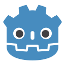
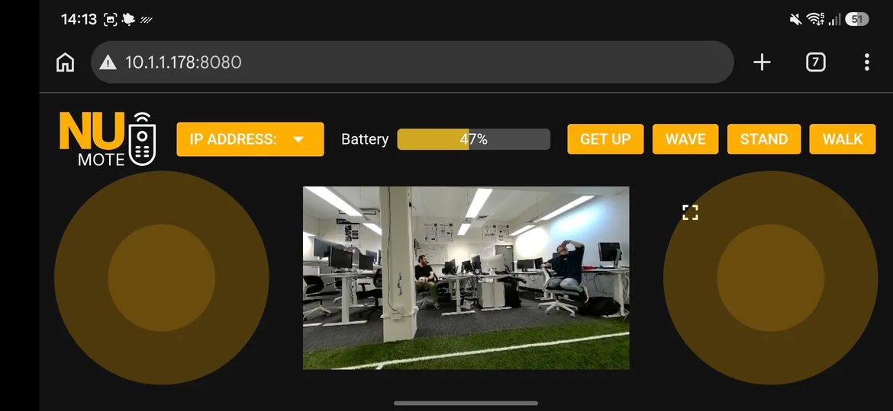

Hi, I am Austin.
BEng Software student, junior ML software engineer and NUbots team member.
ABOUT {
I am a Software Engineering student at the University of Newcastle and a junior ML software engineer at Orica Digital Solutions, where I work on computer vision for rock fragmentation detection and the synthetic data that helps train it.
Away from work I build game AI: state machines, behaviour trees and a goal-oriented action planner, plus procedurally generated levels designed to reward exploration.
Outside of work I like WoW, Dark Souls and Lord of the Rings, films (mostly comedies and action/adventure), music, cooking for others, painting D&D minis, and tabletop games like D&D, Werewolf and Exploding Kittens.
SKILLS {
I work mainly on AI systems and on improving algorithms, and I am comfortable working across the full stack. This is what I use.
"Bad programmers worry about the code. Good programmers worry about data structures and their relationships."
Languages
 Python
Python C++
C++ Java
Java Kotlin
Kotlin
GDScript TypeScript
TypeScript JavaScript
JavaScript HTML
HTML CSS
CSS
ML and vision
 PyTorch
PyTorch TensorFlow
TensorFlow OpenCV
OpenCV- Gymnasium
Techniques
- Reinforcement learning
- Computer vision
- Synthetic data generation
- Game AI
- Procedural generation
Tools
 Docker
Docker Spring
Spring MySQL
MySQL Blender
Blender- Godot
- Unity
- Pygame
- gRPC
 Android
Android- Gradle
- Wireshark
WORK {
Orica Digital Solutions
Junior ML software engineer. Built an end-to-end synthetic data pipeline for training computer vision models, adapted SAHI (Slicing-Aided Hyper Inference) for rock fragmentation detection, and wrote a lightweight synthetic LiDAR system for Blender files to support a feature-matching model.
NUbots
Outreach and vision teams. Helped lead demonstrations for schools and universities (UNSW, Guizhou University, and the AROSE event at Newcastle Museum), and am reworking the segmentation and semantic vision detection model while developing a depth estimation model.
Robotildas
A new joint RoboCup team between NUbots and UNSW's rUNSWift.
PROJECTS {
-
SuperMarioAgent
Reinforcement learning agent for gym-super-mario-bros. OpenCV sprite detection feeds an epsilon-greedy policy; first completion after 17 epochs.
-
NUmote
A mobile-friendly web interface for controlling a NUbots robot directly, without a running binary.
-
GPSTracker
A geofencing tracker that combines real-time location with a tilt sensor to predict danger zones. Built for Orica Hackathon #4 (2025).
-
PSDCalc
A particle size distribution calculator that uses equivalent volume boxes (EVB) to approximate synthetic rock volumes.

CONTACT {
Based in Newcastle, NSW. Find me on GitHub or LinkedIn, or download my resume.